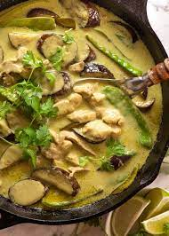

Thai Green Curry

Description
Thai Green Curry is a popular and flavorful dish that originates from Thailand. It is a part of Thai cuisine and
is known for its aromatic and vibrant green color. The curry gets its name from the green chili peppers used in
its preparation, which gives it a characteristic spiciness.
The base of Thai Green Curry is a fragrant paste made from green chilies, lemongrass, galangal (Thai ginger),
garlic, shallots, coriander, and other herbs and spices. This paste is sautéed in coconut milk to release its
flavors, creating a rich and creamy sauce.
Traditionally, Thai Green Curry includes tender pieces of chicken or beef, but it can also be made with shrimp,
tofu, or vegetables for a vegetarian or vegan version. The protein and vegetables are simmered in the green
curry sauce until cooked and infused with the aromatic flavors.
Thai Green Curry is often served with steamed jasmine rice, which helps balance the spiciness and complements the
creamy texture of the curry. To enhance the taste, it is common to garnish the dish with fresh Thai basil
leaves, sliced red chili peppers, and sometimes a drizzle of coconut milk.
The combination of heat from the chilies, the aromatic herbs, and the creaminess of the coconut milk makes Thai
Green Curry a delightful and comforting dish that has gained popularity worldwide for its unique and exotic
flavors. Whether enjoyed at a local Thai restaurant or prepared at home, it is a dish that pleases the palate
and leaves a lasting impression.
Here's a list of ingredients typically used to make Thai Green Curry:
- 1 pound (450g) chicken, beef, shrimp, tofu, or vegetables (e.g., eggplant, bell peppers, bamboo shoots)
- 1 can (14 oz/400ml) coconut milk (use the thicker part on top for a richer curry)
- 1 cup (250ml) chicken or vegetable broth
- 2 tablespoons vegetable oil
- 2 tablespoons fish sauce (use soy sauce or tamari for vegetarian/vegan version)
- 2 tablespoons palm sugar or brown sugar
- 1 cup Thai basil leaves (or regular basil leaves)
- 1-2 Kaffir lime leaves (optional, but they add a lovely aroma)
- Thai jasmine rice, for serving
Here's a step-by-step guide on how to make Thai Green Curry:
Step 1: Prepare the Green Curry Paste
- n a blender or food processor, add all the ingredients for the green curry paste - green chili peppers,
shallots, garlic, lemongrass, galangal or ginger, cilantro stems, Kaffir lime zest, ground coriander,
ground cumin, white pepper, shrimp paste (if using), and salt.
- Blend everything together until you get a smooth and fragrant green curry paste. If necessary, add a
little water to help with the blending.
Step 2: Prepare the Ingredients for the Curry
- Cut the protein of your choice (chicken, beef, shrimp, tofu) into bite-sized pieces.
- If using vegetables, wash and chop them into bite-sized pieces as well.
Step 3: Cook the Curry
- In a large pot or wok, heat the vegetable oil over medium heat.
- Add the green curry paste to the pot and sauté it for a couple of minutes until it becomes aromatic.
- Pour in the thicker part of the coconut milk from the can, and stir it with the curry paste. Let it
simmer for a few minutes until the oil starts to separate and rise to the top.
- Add the protein (chicken, beef, shrimp, tofu) to the pot and stir to coat it with the curry sauce.
- Pour in the chicken or vegetable broth and bring the mixture to a gentle boil.
- Add the Kaffir lime leaves (if using) and simmer the curry for about 10-15 minutes or until the protein
is fully cooked and tender.
- Add the remaining coconut milk, fish sauce (or soy sauce/tamari), and palm sugar (or brown sugar). Stir
until the sugar dissolves.
- Toss in the chopped vegetables (if using) and let them cook for a few minutes until they are
tender-crisp.
Step 4: Finishing Touches
- Once the curry is cooked and all the flavors have melded together, taste and adjust the seasoning,
adding more fish sauce for saltiness, sugar for sweetness, or lime juice for acidity, according to your
preference.
- Stir in the Thai basil leaves (or regular basil leaves), which add a fresh and aromatic touch to the
dish.
Step 5:Serve
- Serve the Thai Green Curry hot over steamed jasmine rice.
- Garnish with some additional basil leaves and sliced red chili peppers for a pop of color and extra
spice (optional).